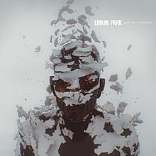

|
Linkin Park - Living Things: A Return to Roots with a Modern Twist  |
||
|
Album Overview Living Things is the fifth studio album by American rock band Linkin Park, released on June 20, 2012, through Warner Bros. Records. The album was produced by Rick Rubin and Mike Shinoda. Living Things marks a return to the band's earlier sound while incorporating elements from their more recent experimental work. Title: Living Things Artist: Linkin Park Release Date: June 20, 2012 Genre: Alternative Rock, Electronic Rock, Rap Rock Label: Warner Bros. Records Duration: 36:59 Tracklist
Notable Singles
Impact and Legacy Living Things represented a blend of Linkin Park's various musical styles, combining elements of their earlier nu metal and rap rock sound with the electronic and experimental approaches of their more recent albums. This fusion resulted in a sound that was both familiar to long-time fans and fresh in its execution. The album was well-received by critics and fans alike, with many praising the band's ability to evolve while still maintaining their core identity. It debuted at number one on the Billboard 200, becoming their fourth album to top the chart. Living Things is notable for its introspective lyrics, focusing on personal relationships and internal struggles. The electronic elements are more pronounced than in their earlier work, but integrated seamlessly with their rock instrumentation. The album's lead single, "Burn It Down," became a hit on rock radio and showcased the band's new sound. "Castle of Glass" gained additional popularity after being featured in the video game "Medal of Honor: Warfighter". Living Things solidified Linkin Park's position as a band capable of evolving their sound while still appealing to their core fanbase. It demonstrated their ability to adapt to changing musical landscapes while retaining their distinctive style, influencing many artists in the alternative and electronic rock scenes. |